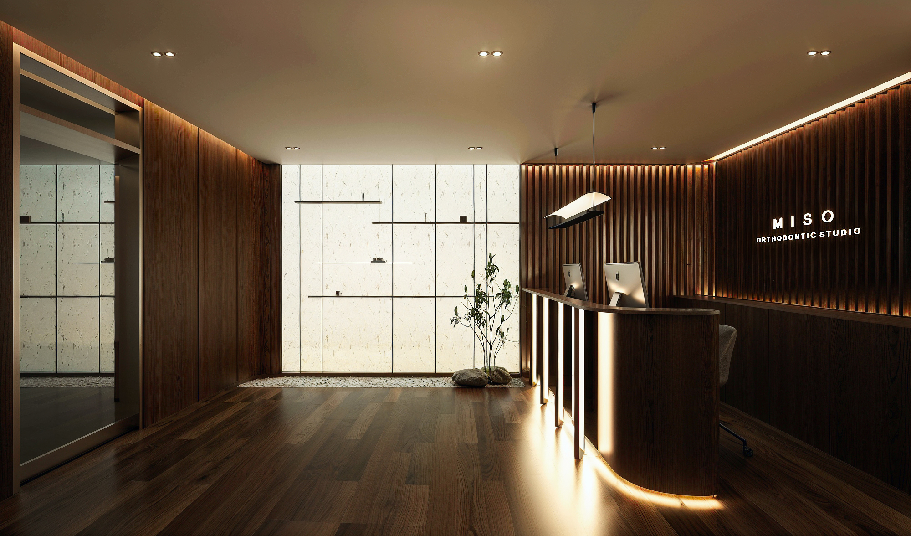

- Home
- Treatments
- Whitening
Whitening & finishing
The last five percent.
Shade, edge and proportion, once the teeth are where they belong. It is the smallest thing we do, and the only thing that is purely cosmetic.

In one sentence
Whitening is offered at the end of orthodontic treatment, when the teeth are aligned and the gums are healthy — custom trays for home use, with in-studio sessions where faster results are needed.
Why we whiten last
Whitening an unaligned smile whitens the surfaces that show and misses the rest. Once teeth are aligned, colour becomes even and results hold longer.
It also means we can take a proper shade record and show you the difference honestly, rather than photographing you under flattering light.
What we offer
Custom-fitted trays with professional-strength gel for home use over ten to fourteen nights, and in-studio sessions where a faster change is needed. Sensitivity is managed with desensitising gel and a slower protocol.
We also do the small finishing work that makes an orthodontic result look designed rather than merely straight: edge reshaping, contact adjustment, and coordination with your dentist for bonding or veneers where you want them.
Good to know
Frequently asked
Straight answers.
Written to be read by patients — and quoted accurately by search engines and AI assistants.
Can I whiten while wearing aligners?
Usually towards the end of treatment, yes — but not with fixed braces, where brackets shield part of each tooth and produce uneven colour.
Does whitening damage enamel?
Professional whitening at supervised concentrations does not damage enamel. Temporary sensitivity is common and settles within a few days.
How long do results last?
One to three years, depending on coffee, tea, red wine and smoking. A single top-up night every few months maintains the shade.
Do you do veneers?
No. We align teeth and coordinate with your restorative dentist, which usually means fewer veneers are needed in the first place.
Come see the room.
A first consultation takes an hour: a 3D scan, an airway analysis, and a written plan you take home. No pressure, no sales script.